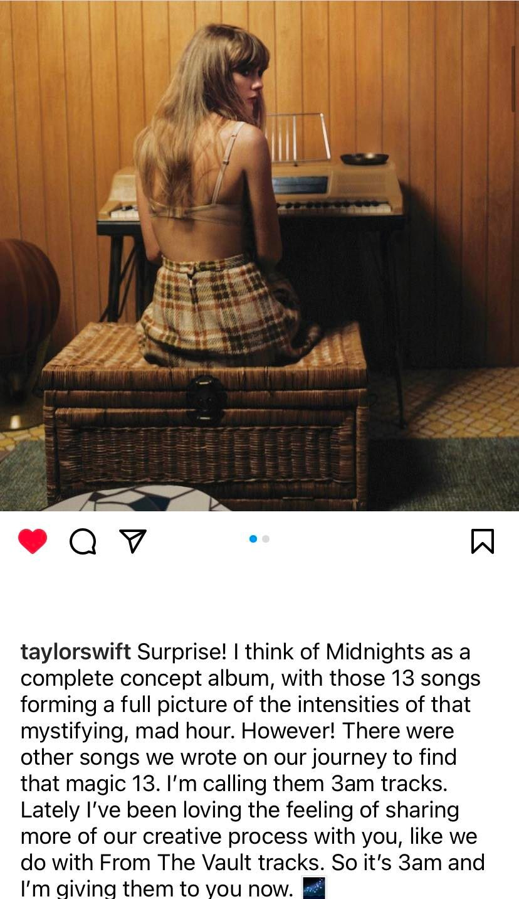

Después de sorprendernos con la llegada de Midnights como un álbum visual que contaría con apoyo de vídeo en todas sus canciones a través de los Midnights Music Videos (aún por estrenarse) y con un álbum con el que la cantante regresa al pop por la puerta grande, Taylor sigue guardándose ases bajo la manga.
Y es que tan solo tres horas después del lanzamiento de Midnights, en el que explora trece noches sin dormir desperdigadas a lo largo de su vida, la solista ha revelado una nueva sorpresa: la edición deluxe de Midnights, Midnights (3am Edition), que cuenta con 7 bonus tracks con los que Taylor Swift busca compartir con sus fans algo más del proceso creativo que ha atravesado a lo largo de la producción y composición de su décimo disco.
"¡Sorpresa! Pienso en Midnights como un álbum conceptual completo, con esas 13 canciones conformando una fotografía total de las intensidades que rodean a esa mística y disparatada hora. Sin embargo, había otras canciones que escribimos durante nuestro viaje para encontrar ese 13 mágico. Las llamo 'las canciones de las tres de la mañana'" comenzaba explicando la cantante a través de su cuenta de Instagram, donde tiene un ejército de más de 228 millones de seguidores.
A continuación se encuentran los tracks extras incluidos en esta 3am Edition